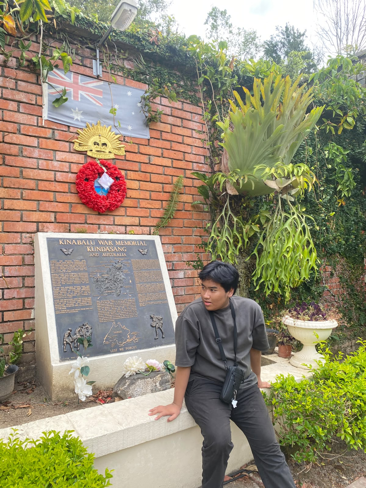

Saya mahasiswa baru jurusan sistem informasi,ini adalah portofolio saya secara singkat.

Siapa saya, apa yang saya pelajari, dan apa yang saya suka.
Halo, saya mahasiswa Sistem Informasi semester 1 yang tertarik pada pengembangan web dan desain antarmuka. Saya suka mengubah masalah sehari-hari menjadi aplikasi yang sederhana dan nyaman dipakai.
Di luar kuliah, saya suka mengotak-atik desain di Figma, mendengarkan musik, dan bermain game counter strike 2.
Organisasi, kepanitiaan, prestasi, dan pendidikan, dari yang terbaru.
Menjalani pendidikan dasar selama 6 tahun
Menjalani sekolah menengah pertama selama 3 tahun
Menjalani sekolah menengah atas selama 3 tahun,mempersiapkan nilai yang terbaik untuk masuk ke pergurana tinggi
Fokus pada pemrograman web, analisis sistem, dan perancangan basis data.
karya atau project yang pernah saya buat